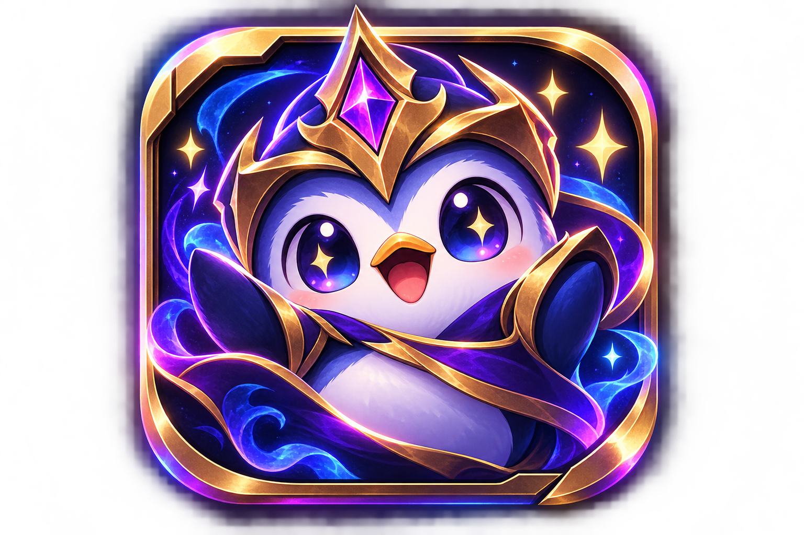

1. Demonstração sintética
Perfil fictício com 12 partidas, histórico, Coach, Ask Chibi e detalhes de partida. Não chama a Riot API e todo dado de jogador é explicitamente marcado como sintético.

chibi.ggEsta página reúne o protótipo, a demonstração sintética e os documentos públicos necessários para revisar o escopo do produto sem depender de uma Riot API key temporária.
Perfil fictício com 12 partidas, histórico, Coach, Ask Chibi e detalhes de partida. Não chama a Riot API e todo dado de jogador é explicitamente marcado como sintético.
Fluxo real por Riot ID usado para demonstrar perfil e histórico quando uma chave temporária está disponível. O fluxo de produção pessoal está preparado para migrar para RSO após aprovação.
Fontes de dados, Chibi Dataset, limitações da Match API e os limites de gameplay do produto.
Privacidade, Termos, arquivo de verificação Riot e repositório público.
Privacidade · Termos · riot.txt · GitHub
O protótipo atual usa Riot ID para que o produto possa ser avaliado antes da aprovação. Para self-history em produção, o plano técnico do Chibi é migrar para Riot Sign On quando a aplicação de produção for aprovada e a Riot disponibilizar o onboarding/credenciais aplicáveis.
Chibi.gg isn't endorsed by Riot Games and doesn't reflect the views or opinions of Riot Games or anyone officially involved in producing or managing Riot Games properties. Riot Games, and all associated properties are trademarks or registered trademarks of Riot Games, Inc.
Chibi.gg was created under Riot Games' "Legal Jibber Jabber" policy using assets owned by Riot Games. Riot Games does not endorse or sponsor this project.